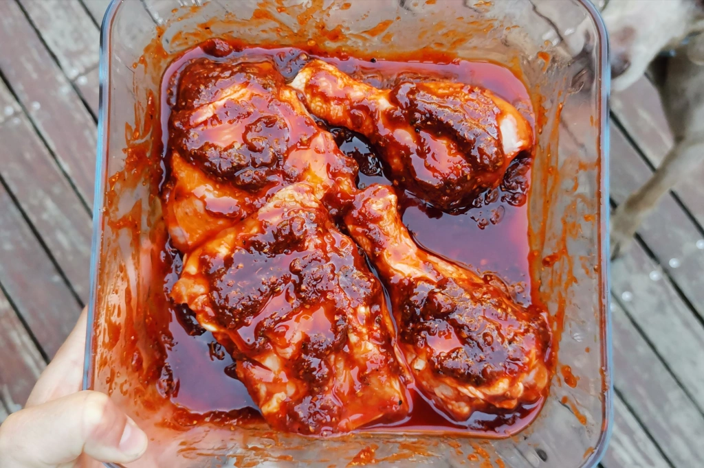

Step 1: Marinating the Meat
Combine the chicken, pork, soy sauce, and half of the garlic in a large bowl. Mix well. Marinate this for at least 1 hour. Note: For best results, marinate this overnight.
NextHearty, popular, and oh so flavorful! Chicken Pork Adobo is a dish many Filipinos have tried at home. It is a classic Filipino dish that combines tender chicken and pork with a savory, tangy, and slightly sweet sauce. It is a beloved comfort food that showcases the rich flavors of Filipino cuisine. Follow these steps to experience the wonderful taste of Chicken Pork Adobo.
Combine the chicken, pork, soy sauce, and half of the garlic in a large bowl. Mix well. Marinate this for at least 1 hour. Note: For best results, marinate this overnight.
Next